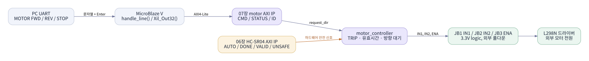
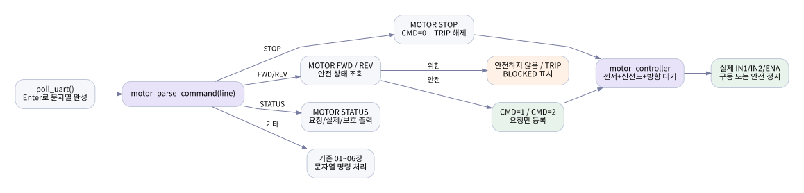

과제 개요 · 06장 다음에 추가하는 기능
MicroBlaze V가 UART 문자열 명령을 받아 AXI4-Lite에 방향을 요청하고, 모터 구동 허용 여부는 독립 RTL이 판단합니다. 초음파 측정값이 오래되거나, 물체가 가까워지거나, 센서 오류·SONIC OFF가 발생하면 ENA를 차단합니다.

| 기준 | 내용 |
|---|---|
| 프로젝트 | soc_ip_design_07 (06장 프로젝트를 복제해 생성) |
| 외부 드라이버 | L298N 계열 모듈(모터 전원 외부 공급) |
| 안전 회로 | motor_controller.v의 직접 출력 차단·정/역방향 대기·TRIP |
UART 명령·정상 동작
| 입력 + Enter | 결과 |
|---|---|
| MOTOR FWD | 센서 AUTO 활성·유효 거리·TRIP 해제 시 정회전 요청 |
| MOTOR REV | 위 조건 충족 시 역회전 요청, 주행 중이면 출력 OFF 대기 후 전환 |
| MOTOR STOP | 언제든 정지 요청, TRIP 해제(다음 FWD/REV는 별도 입력) |
| MOTOR STATUS | 요청 방향, 실제 출력, 정지/위험/신선도 표시 |
| SONIC ON | 주기 측정 시작. 첫 유효 측정 전에 MOTOR는 시작 불가 |
| SONIC OFF | 주기 측정 중지 → 모터 즉시 차단, 구동 중이면 TRIP 기록 |
| WARN 20 | 20 cm 이하를 위험으로 판정, 근접 정지 연계 |
| WARN OFF | LED2 경고만 비활성화, 모터 보호는 그대로 적용 |
| STATUS | 01~06장 기존 상태 + 07장 MOTOR 필드 추가 |

요청값과 실제 구동값은 다릅니다. OK MOTOR REQUESTED FWD는 회전 확인이 아니라 AXI 명령 기록만 의미합니다. 실제 실행 여부는 MOTOR STATUS의 MOTOR_ACT 및 MOTOR_EN으로 판정합니다.
모터 제어 안전 규칙
모터 구동 허용
SONIC AUTO ON(명령: SONIC ON), 최신 유효 완료값, 20cm 초과(기본), TRIP 해제가 모두 필요합니다.
즉시 차단 조건
근접, 잘못된 거리, 센서 미응답, SONIC OFF, 샘플 250ms 초과 → ENA 낮음. 오류 중 발생한 구동 요청은 TRIP으로 기록됩니다.
| 시험 입력 | 기대 출력·상태 |
|---|---|
| 부팅 직후 | IN1=0, IN2=0, ENA=0 |
| SONIC ON 직후 유효값 없음 | 구동 금지 |
| 정상 거리·MOTOR FWD | ENA=1, IN1=1, IN2=0 |
| MOTOR REV 전환 | 양방향 IN1/IN2/ENA=0 구간을 둔 뒤 반전 |
| 근접 / 센서 오류 / 유효시간 만료 | ENA=0, MOTOR_TRIP=1 |
| 거리 복귀 후 FWD 재입력 | TRIP이 남아 있으면 BLOCKED |
| MOTOR STOP 후 안전 재확인, 새 FWD | 재시작 가능 |
Basys3–L298N 배선·전압 규칙
| Basys3 Pmod | FPGA PACKAGE_PIN | 드라이버 | 주의 |
|---|---|---|---|
| JB1 | A14 | IN1 | 모터 방향 제어 |
| JB2 | A16 | IN2 | 모터 방향 제어 |
| JB3 | B15 | ENA | 모듈 ENA 점퍼 제거, 외부 풀다운 추가 |
| Pmod GND | – | GND | 외부 드라이버와 FPGA의 신호 접지 공통 |
| 외부 DC 공급 | – | Vs / motor power | 모터 정격·드라이버 사양에 맞는 별도 전원 |
기존 JA1 CdS, JA2 TRIG, JA3 ECHO, 내장 LED0~2, FND·방향 버튼·BTNC Reset·USB UART의 기존 연결은 변경하지 않습니다.
사용자 AXI4-Lite 레지스터 맵
| Byte Offset | 레지스터 | 접근 | 의미 |
|---|---|---|---|
| 0x00 | CMD | RW | 0 STOP, 1 FWD, 2 REV; STOP 쓰면 TRIP 해제 |
| 0x04 | STATUS | RO | bit0 EN, 1 FWD, 2 REV, 3 TRIP, 4 DEADTIME, 5 SAFE, 6 FRESH, 7 AUTO, 8 REQ_NONZERO, 9 BLOCKED |
| 0x08 | ID | RO | 0x00070001 |
| 0x0C | DEADTIME | RO | direction blanking clock cycles |
| 0x10 | FRESHNESS | RO | completed sonar sample maximum age clock cycles |
| 0x14 | CLK_HZ | RO | actual AXI clock frequency supplied to IP |
motor_in1, motor_in2, motor_ena는 AXI 레지스터를 직접 연결한 GPIO가 아닙니다. motor_controller가 센서 조건과 TRIP·방향 전환 상태를 반영하여 출력합니다.
기본 파라미터: CLK_HZ=100000000, DEADTIME_CYCLES=10000000(100ms), FRESH_CYCLES=25000000(250ms). 실제 AXI 클록에 따라 재산정합니다.
06장 출발 프로젝트 확인
작업 · GUI / 입력
06장의 Vivado/Vitis 실물 기준 프로젝트가 실제로 만들어져 있는지 확인. 아직 06장 실제 프로젝트가 없다면 01~06장 실습을 먼저 완료하고 07장으로 넘어갑니다.
화면 · 출력 확인
Sources에 06장 IP 및 기존 UART/GPIO/Timer/INTC/FND/CdS/SONIC IP 확인. 06장 HTML 작성만으로 06장 XPR이 생긴 것은 아닙니다.
07장 독립 프로젝트 생성
작업 · GUI / 입력
Vivado에서 06장 프로젝트 열기 → File → Project → Save As → 새 프로젝트 soc_ip_design_07 선택. 신규 프로젝트 XPR 위치 확인.
화면 · 출력 확인
~/soc/hw/soc_ip_design_07/soc_ip_design_07.xpr와 신규 .srcs가 존재. 원본 06장 XPR 변경 없음.
원본 참조·리포지토리 경계 검사
작업 · GUI / 입력
Sources와 Tools → Settings → IP → Repository에 등록된 경로 확인. 06장 사용자 AXI IP 소스는 07장 프로젝트 내부 ip_repo로 복사해 별도 패키징.
화면 · 출력 확인
07장 파일을 수정해도 원본 06장 파일이 달라지지 않아야 합니다. 경로가 절대경로로 06장을 가리키면 07장 복제본으로 교체.
배선도 검토·전원 OFF 검사
작업 · GUI / 입력
rtl/motor_jb_only.xdc와 JB1~JB3 배정, 모터 드라이버 IN1/IN2/ENA 및 접지 확인. 전원 OFF 상태에서 배선.
화면 · 출력 확인
ENA 점퍼 제거와 외부 풀다운 여부, 모터 외부 전원 분리, ECHO 레벨시프터 확인.
07장 AXI IP 마법사 실행
작업 · GUI / 입력
Vivado → Tools → Create and Package New IP → Create a new AXI4 peripheral. 이름 p2_07_axi_motor, AXI4-Lite S00_AXI, Data Width 32, Number of Registers 6, Address Width 6 이상으로 생성.
화면 · 출력 확인
신규 IP 폴더에 AXI 슬레이브 파일과 최상위 IP가 생성. 생성 직후 자동 소스는 아직 07장 레지스터 규격이 아닙니다.
전체 RTL 3개 파일 적용
작업 · GUI / 입력
생성된 템플릿에 최상위 IP RTL 및 AXI Slave 전체 RTL을 적용하고 motor_controller.v를 추가.
화면 · 출력 확인
IP Packager File Groups에 세 파일 포함, S00_AXI 버스 인터페이스가 연결됨.
06장 SONIC AXI 복제본에 안전 출력 추가
작업 · GUI / 입력
07장 프로젝트 내부에 복제한 reuse/p2_06/p2_06_axi_sonic_v1_0.v와 ..._S00_AXI.v를 적용하고 sonic_auto_o, sonic_done_o, sonic_valid_o 3개 출력을 패키지 포트로 노출합니다.
화면 · 출력 확인
기존 sonic_unsafe_o와 신규 3개가 IP에 표시됨. 06장 프로젝트 원본에는 영향 없음.
IP 업데이트·파일 그룹 검증
작업 · GUI / 입력
각 IP의 Review and Package → Re-Package IP. Package IP 결과 파일 목록과 포트/파라미터를 확인.
화면 · 출력 확인
07장 AXI IP는 32비트 데이터/6비트 주소, 모터 출력 3개, 센서 입력 4개를 보유.
독립 Motor Core RTL 테스트
작업 · GUI / 입력
tb_motor_controller.v로 reset, 유효 측정 전 차단, 안전 주행, 주행 종료·방향 전환 deadtime, 근접 즉시 OFF, TRIP, STOP 재시작, stale timeout 검사.
화면 · 출력 확인
각 조건에서 기대 신호와 단언을 확인.
독립 AXI Slave 시뮬레이션
작업 · GUI / 입력
tb_p2_07_axi_motor.v로 AW 먼저/W 먼저, B/R 응답 보존, CMD 3 오류, RO 쓰기 거부, ID 읽기 검사.
화면 · 출력 확인
BRESP=SLVERR(10)·RRESP=SLVERR(10) 등, 부적합 접근에서 장치 상태 불변 확인.
Block Design에 Motor IP 추가
작업 · GUI / 입력
soc11_integration.bd 열기 → Add IP → p2_07_axi_motor 배치 → Run Connection Automation을 통해 S00_AXI를 기존 MicroBlaze V AXI 경로에 연결.
화면 · 출력 확인
기존 CPU, BRAM, UART Lite, GPIO, Timer, INTC, FND, Button, PWM, CdS, SONIC IP 모두 남음.
SONIC 안전 신호 BD 내부 연결
작업 · GUI / 입력
동일 AXI 클록 도메인에서 sonic_auto_o→sonic_auto_i, sonic_done_o→sonic_done_i, sonic_valid_o→sonic_valid_i, sonic_unsafe_o→sonic_unsafe_i 연결.
화면 · 출력 확인
각 신호 방향이 일치하고 연결 누락 없음. sonic_alert_o는 LED2만 담당; 모터 안전에는 사용 금지.
Clock/Reset/주파수 확인
작업 · GUI / 입력
07장 AXI IP의 s00_axi_aclk·s00_axi_aresetn을 06장 SONIC의 동일 AXI 클록·리셋에 연결. CLK_HZ를 실제 클록에 맞게 설정.
화면 · 출력 확인
DEADTIME_CYCLES / CLK_HZ는 0.1초, FRESH_CYCLES / CLK_HZ는 0.25초가 되도록 점검.
Address Editor 실제 BASEADDR 지정
작업 · GUI / 입력
Address Editor에서 모터 IP 영역 크기 64 byte 이상 설정, 이전 01~06장 주소와 중복되지 않는 새 BASEADDR 지정.
화면 · 출력 확인
IP 전체 영역이 중복되지 않으며 매크로 P2_07_MOTOR_BASEADDR에 실제 XSA/BSP 값을 기록.
모터 출력 3개만 BD 외부화
작업 · GUI / 입력
motor_in1_o, motor_in2_o, motor_ena_o를 각각 motor_in1, motor_in2, motor_ena 이름으로 외부화. Validate Design.
화면 · 출력 확인
BD 외부 출력 3개, 기존 06장 외부 입력·출력 유지.
Vivado 관리 Wrapper 재생성
작업 · GUI / 입력
BD Generate Output Products → Create HDL Wrapper에서 Vivado 관리 방식 사용. 실제 선언부에 세 신규 포트와 기존 포트가 있는지 검사.
화면 · 출력 확인
soc11_integration_wrapper.v가 새 하드웨어 계층과 일치.
사용자 Top 적용
작업 · GUI / 입력
basys3_soc11_top_p2_07.v 내용을 07장 Top에 적용 후 Set as Top. 신규 Wrapper 포트 3개를 1:1 연결.
화면 · 출력 확인
LED0~2, SONIC, CDS, FND, 버튼, UART 배선과 새 motor_in1/2/ena 출력 보존.
JB XDC 핀 설정
작업 · GUI / 입력
motor_jb_only.xdc의 3개 제약을 07장 XDC에 적용. 기존 XDC의 동일 FPGA 핀 중복 여부 확인.
화면 · 출력 확인
A14, A16, B15의 LVCMOS33. Clock 제약을 중복 추가하지 않음.
Synthesis·Implementation·Timing
작업 · GUI / 입력
Run Synthesis → Run Implementation → Report Timing Summary → Report DRC → Generate Bitstream. Clock/Reset 제약과 unused port 경고를 확인.
화면 · 출력 확인
WNS/TNS, DRC, 사용 자원, RTL 최적화에 의해 모터 안전 신호가 누락되지 않았는지 점검.
새 XSA 및 Vitis Application 생성
작업 · GUI / 입력
File → Export → Export Hardware(Bitstream 포함) → Vitis Platform 생성/갱신 → 07장 Application 생성. main_p2_07.c 및 p2_03~07 helper C/H 등록.
화면 · 출력 확인
07장 XSA와 BSP가 일치하고 07장 AXI 주소를 xparameters.h에서 확인. SDT/Classic IRQ 설정도 실제 값으로 대조.
모터 분리 상태 UART 출력 실습
작업 · GUI / 입력
모터·드라이버 전력을 아직 연결하지 않은 상태에서 3.3V GPIO 측정. STATUS → SONIC ON → 유효한 거리에서 MOTOR FWD → MOTOR STATUS → MOTOR REV → MOTOR STOP.
화면 · 출력 확인
모터 출력 논리는 3.3V이고 ENA는 허용 조건이 아닐 때 0. 센서 20cm 이내에서 MOTOR_EN=0, TRIP 기록.
실물 모터 구동·오류 실습
작업 · GUI / 입력
전원 OFF 확인 후 실제 모터와 드라이버 연결, 외부 전원만 별도 공급. 작은 부하로 FWD/REV/STOP 및 방향 전환 대기 확인. 물체 20cm 이내 접근/센서 분리/SONIC OFF/WARN OFF 각각 검사.
화면 · 출력 확인
WARN OFF여도 근접 정지가 유지되는지, TRIP 후 STOP 없이 재가동 불가한지, 멈춘 축이 관성으로 돌 수 있음을 확인.
01~06장 기존 기능 확인
작업 · GUI / 입력
LED ON/OFF, DISP 0050/OFF, 방향 버튼 SHORT/LONG/IRQ, PWM 0/50/100, AUTO ON/OFF, CDS READ/POL, SONIC READ/SHOT, WARN, LED14/15 Timer/UART 기능을 각각 확인.
화면 · 출력 확인
각 기능과 Vivado/Bitstream/XSA/BSP 버전·보드 배선을 확인.
증상별 문제 해결
| 현상 | 가능한 원인 | 확인 항목 |
|---|---|---|
| MOTOR FWD 입력해도 움직이지 않음 | SONIC AUTO OFF / 유효 데이터 없음 / TRIP | MOTOR STATUS: SAFE, FRESH, TRIP, AUTO; 먼저 SONIC ON |
| MOTOR 요청은 FWD인데 ACT=STOP | deadtime 또는 센서 안전 차단 | STATUS와 센서 정상값을 분리 확인 |
| 근접 후 거리를 늘려도 재가동 안 됨 | 의도한 TRIP latch | MOTOR STOP → 안전 재확인 → 새 MOTOR FWD |
| WARN OFF 후에도 MOTOR 정지 | 의도된 안전 분리 | sonic_unsafe_o는 WARN_EN에 영향받지 않음 |
| 방향 전환 즉시 이루어지지 않음 | 정/역 전환 deadtime | DEADTIME 100ms(클록 기준) 확인 |
| 센서 데이터 멈춤 후 모터 정지 | 신선도 카운터 만료 | SONIC_DONE 연결/갱신 및 FRESHNESS 확인 |
| 모터 출력 방향 바뀜 | IN1/IN2 물리 배선 및 모터 극성 | 표준은 상대 방향이며 실제 회전방향은 부하·배선에 따라 달라짐 |
| L298N ENA가 계속 HIGH | ENA 점퍼 남음/출력 핀 부유 | 점퍼 제거, 외부 풀다운, 전원 OFF 재배선 |
| 모터 연결 시 FPGA Reset/재부팅 | 전원 전압 강하·접지·노이즈 | 별도 전원·디커플링·역기전력/배선 분리 검토 |
| IP 패키징 실패 | 소스 File Groups 누락·포트명 불일치 | 07장 SONIC 복제본 3개 출력 + 07장 motor IP 3개 출력 |
소스·설명 자료
| 공식 기준 자료 | 링크 |
|---|---|
| ST L298 제품 및 데이터시트 | ST 공식 L298 PDF |
| Digilent Basys3 Master XDC | Digilent 저장소 |
| 제1부 11장 원본 | amd_soc/p1_11 |